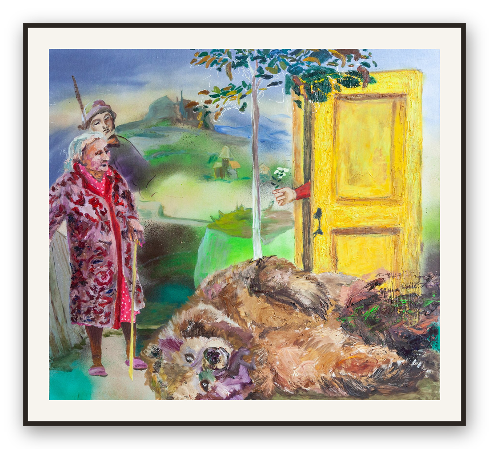

Для нашего проекта арт-коучинга главной визуальной метафорой стала дверь.
Дверь — это всегда переход. Выход из привычного сценария, проход в новое пространство, возможность оказаться там, где раньше не был. Но для нас важна не сама открытая дверь, а то, что она предлагает увидеть, почувствовать или взять с собой.
Иногда дверь становится границей между мирами: реальным и внутренним, прошлым и будущим, жизнью и памятью, порядком и хаосом. Именно так работает визуальный язык «Мальчик и птица» Хаяо Миядзаки. В его историях предметы почти никогда не являются просто вещами — каждый из них становится приглашением к путешествию, внутренней трансформации или важному выбору.
В визуальном нарративе смысл рождается не из объекта, а из отношений между объектами. Именно поэтому один и тот же кадр может рассказывать совершенно разные истории. Предмет определяет, чем станет дверь: входом в память, приглашением к диалогу, точкой выбора или началом нового пути.
Представьте
- Дверь открывается, и рука протягивает ключ. Но очевидно, что он не подходит к этой двери.
- Дверь открывается, и рука держит маленькое дерево с корнями — напоминание о том, что любые изменения начинаются с опоры.
- Дверь открывается, и рука выносит маску, внутри которой пустота. Кто я, если снять все роли?
- Дверь открывается, и рука протягивает песочные часы. Время — единственный ресурс, который невозможно вернуть.
- Дверь открывается, и рука держит маленькую птицу. Свобода всегда требует решимости отпустить.
- Дверь открывается, и рука выносит малярную кисть, с которой капает краска. Мир не только открывается — его можно создавать.
- Дверь открывается, и рука дарит цветок мака — символ памяти, хрупкости и способности проживать утраты, сохраняя связь с жизнью.
- Дверь открывается, и рука показывает зеркало, в котором отражается зритель. Самое важное путешествие начинается не наружу, а внутрь.
- Дверь открывается, и рука держит красный воздушный шарик на тонкой веревочке — напоминание о мечтах, которые мы часто отпускаем раньше времени.

Именно так работает арт-коучинг. Он не открывает дверь вместо человека и не подсказывает, что находится за ней. Он помогает увидеть образ, который появился на пороге именно сейчас, понять, почему именно он оказался перед вами, и какой вопрос задает.
Потому что иногда настоящие изменения начинаются не с нового решения, а с новой метафоры. А иногда — с двери, за которой впервые становится возможным встретиться с самим собой.
Что за этим стоит: что посмотреть
«Мальчик и птица» (2023), режиссер Хаяо Миядзаки, студия Ghibli. История, где вещь никогда не бывает просто вещью.
А методологический каркас, который переводит этот образ в работу, — цикл Колба: опыт, наблюдение, осмысление, действие.